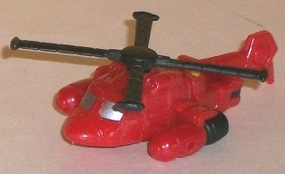
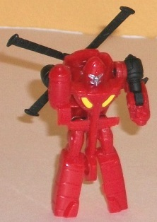
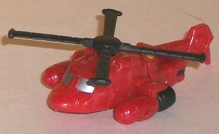
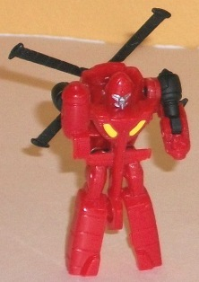
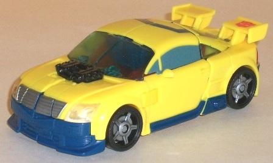
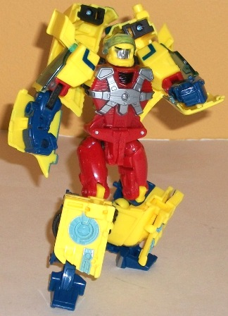
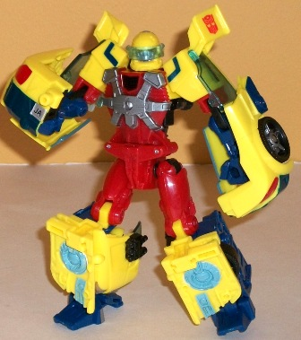

Jolt
Jolt
 
Allegiance : Minicon
Size : Mini-Con
Series : Armada
Difficulty of Transformation : Very Easy
Color Scheme : Red and some black, silver, and yellow
Individual Rating : 4.3
Hot
Shot w/ Jolt (Universe 2.0)
Jolt


Allegiance
: Minicon
Size
: Mini-Con
Series
: Armada
Difficulty of Transformation
: Very
Easy
Color Scheme
: Red and some black,
silver, and yellow
Individual Rating
: 4.3
Jolt's vehicle mode is
still a red, rather round helicopter. The mold detailing is very good for
the size, full of panels and even some rivet detailing. The red-with-some-black
color scheme works well, even though it's not particularly eye-popping.
Compared to the
previous version
of this Jolt,
the thruster-pods on the sides aren't so obviously the hands in vehicle
mode, as the hands are only molded on the bottom and not just THERE. However,
the upper legs poke out rather obviously from the rear end of the vehicle
mode.
In robot mode, however,
Jolt is definitely a step down from his Armada version, which is a pretty
big disappointment since that toy came out 8 years ago as of this writing.
For one, it's practically IMPOSSIBLE to stand him up! His feet are hollow
shells with no heels, and he's rather back-heavy due to the front part
of his vehicle mode folding behind his back. I also don't like his tail
section just hands down between his legs almost to his feet, which just
looks ridiculous. His articulation is rather limited for a Minicon, though
not overly so when you compare him to other Armada Minicons-- he can move
back-and-forth at the shoulders, elbows, and hips. That's it, though--
know knee articulation, which might've helped him, y'know, STAND UP.His
robot parts are molded quite well, though, and his propeller on his back
spins very well.
 Hot
Shot
Hot
Shot



Allegiance
: Autobot
Size
: Deluxe
Series
: Armada
Difficulty of Transformation
: Medium
Color Scheme
: Yellow, red, dark
blue, and some silver, pale transparent blue, clear plastic, dull pale
sky blue, and black
Individual Rating
: 8.2
Compared to his Armada
version, Universe 2.0 Hot Shot's vehicle mode looks a bit more rounded,
particularly on top. The rear spoiler sections also sticks out a bit more,
and overall the car mode is a bit smaller (likely because of inflation
since the original version's release). The only real "hint" that this is
an Armada toy beyond the character, however, is the fact that Hot Shot
has one (and only one) Powerlinx port on the rear of this mode, slightly
above the license plate (which says JAAM, a HILARIOUS and obscure nod to
a Transformer comic meme). The port doesn't activate any gimmicks, so now
bumper-claws or anything here. Hot Shot's engine block also doesn't become
a gun or anything, either-- for Universe 2.0, the overall design usually
tends to take precendence over stuff like this. I don't like how Hot Shot's
windows are transparent EXCEPT for most of the sides, though (which are
painted). That kinda of mis-matched window color just looks so weird to
me.
Hot Shot's transformation
to robot mode is incredibly innovative, yet still relatively simple for
how different his two modes look-- despite the similarities between this
toy and his Armada in terms of their main features, the transformations
are completely different. Some particularly clever touches involve his
windshield bits folding up INTO his lower legs, and his entire chest basically
flipping around during transformation. The end result is a much better-proportioned
and less "kiddy"-looking Hot Shot, who now looks like he's able to lay
quite the smackdown on someone. His overall proportions are great, giving
him the strong shoulders of his Armada toy byt not at the expense of anything
else. All the necessary paint and mold details are there, and his transparent
visor can flip down over his more reasonably-proportioned head with excellent
light piping. His car parts behind his body are very obvious kibble, as
are the panels behind his lower arms, but otherwise he's got a pretty solid
mode. He does have a fairly annoying QA issue, though-- the tabs which
hold his hips together can come undone rather easily, as the other hips
joints are considerably tighter than those tabs are. In theory, his articulation
is quite good-- he can move at the neck, visor, shoulders (at two points),
elbows (at three points), hips (at three points), knees (at two points),
and ankles. However, the biggest problem with Hot Shot comes with how the
back parts of his car mode just hang off his back-- they get in the way
of movement a LOT and are really annoying. One common solution has been
to plug these pieces into the lower arms, which does free up movement,
but then the lower arms look a little ridiculous with that much car kibble
hanging off them. (Still, they do look like good "fist guards", and given
that Hot Shot doesn't come with any guns...)
Universe 2.0 Hot Shot isn't the best deluxe mold in the line, and it does have its problems-- namely the loose hip clips and the annoying kibble pieces on his back in robot mode. He also doesn't have any neat-o gimmicks like the "axle-zooka" that his Armada version had, and his mini-con Jolt is definitely inferior to the Armada version. However, overall he's still a well-designed and well-sculpted toy and a considerable improvement over his Armada version in both modes, but particularly in robot mode. Mildly recommended; it's nice to see one of the stinker molds of Armada get a fairly nice redo.
Review by Beastbot